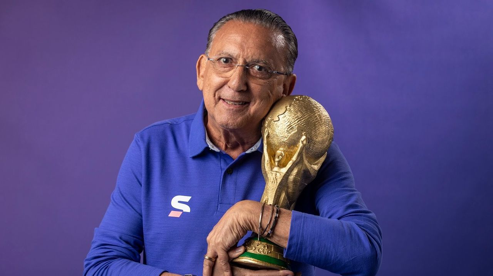
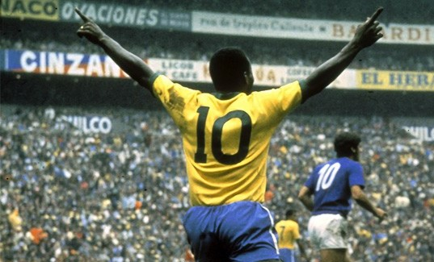

Narrador mais renomado do Brasil
- Galvão Bueno começou sua carreira trabalhando na Rádio Gazeta de São Paulo, em 1974. Passou pela Record e
pela Bandeirantes até chegar à Rede Globo. Sua estreia nessa emissora aconteceu em 1981. Ele narrou o jogo
do Flamengo contra o Jorge Wilstermann pela Taça Libertadores.
- Na década de 90, Galvão Bueno deixou de lado sua carreira na Rede Globo para um trabalho meteórico em outra
emissora: a Rede OM, que depois viraria CNT. Foi lá que ele narrou a primeira conquista da taça Libertadores
do São Paulo F.C., em 1992.
- Galvão gosta de fumar charutos. Sua marca favorita é o cubano Hoyo de Monterrey.
- Uma das “más lembranças” do narrador é o “É tetra, é tetra” da final da Copa de 1994. Hoje, Galvão considera
exagerada sua reação à vitória brasileira.
- Foi nesse mesmo jogo da Copa de 1994 que o locutor popularizou também a frase “vai que é tua, Taffarel”, em
referência ao goleiro brasileiro. O Brasil venceu a Itália por 3 x 2 na disputa de pênaltis.
O rei do futebol
- Quando tinha 15 anos, Pelé entrou no Santos e recebia o equivalente a 75 dólares por mês. Em pouco
tempo, o
Santos aumentou o seu salário para 600 dólares. O Rei do Futebol tem hoje um patrimônio pessoal estimado
em
25 milhões de dólares e sua imagem movimenta o equivalente a 200 milhões de dólares anuais.
- Pelé foi artilheiro do campeonato estadual marcando 58 gols em 1958, na segunda oportunidade em que foi
goleador isolado, entre as 11 vezes que conseguiu tal feito na competição.
-
em 25 de fevereiro de 1958, Nelson Rodrigues chamou Pelé de rei pela primeira vez. Ele escreveu uma
crônica depois de uma vitória do Santos por 5 a 3 sobre América-RJ pelo Torneio Rio-São Paulo, no
Maracanã. Nesta partida, o jovem camisa 10 fez quatro gols.
- Criou o termo 'gol de placa' surgiu por conta de um gol marcado por Pelé no Torneio Rio-São Paulo. Foi
no dia 5 de março de 1961, no confronto entre Fluminense e Santos, no Maracanã. Após driblar vários
adversários desde o meio-campo, Pelé venceu o goleiro Castilho. Empolgado com o feito, o jornalista
Joelmir Beting disse que tal gol merecia uma placa, tamanha sua beleza. Assim, uma placa de bronze foi
feita e colocada na entrada do Maracanã, onde permanece até hoje. Desde então, todos os gols marcados
com rara beleza são intitulados 'gols de placa'.
- Pelé marcou 1.281 gols na carreira. Existem muitas contestações sobre a contagem. De qualquer maneira,
para a história, o gol mil foi marcado no dia 19 de novembro de 1969, de pênalti, contra o Vasco, do
goleiro argentino Andrada, no Maracanã. Eram 39 minutos do segundo tempo, em partida válida pelo Torneio
Roberto Gomes Pedrosa, equivalente ao atual Campeonato Brasileiro.